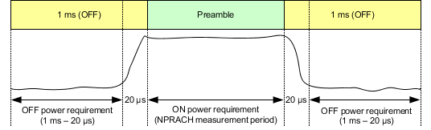
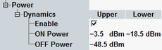

Transmission at excessive uplink power increases interference to other channels. A too low uplink power increases transmission errors. For NPRACH transmission, 3GPP defines a time mask. The mask contains limits for the UL power during preamble transmission (transmit ON power), without preamble transmission (transmit OFF power) and the power ramping in-between.
The ON power is specified as the mean UE output power over the preamble (more exactly, over the NPRACH measurement period, see Table "Measurement period for ON power"). For the OFF power, the mean power has to be measured for 1 ms before and after the preamble. A transient period of 20 µs next to the NPRACH measurement period is excluded.
The following figure provides a summary of the time periods relevant for ON and OFF power limits.

The OFF power must not exceed -48.5 dBm. The ON power must be in the range -18.5 dBm to -3.5 dBm. The limits for ON and OFF power can be set in the configuration dialog.
